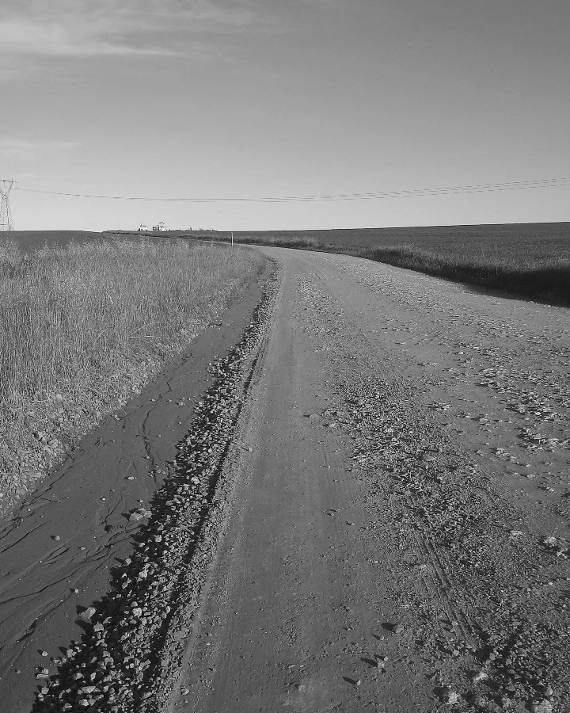

A magia das cidades do interior

"Ainda que fujas do campo para a cidade, ou da rua para a tua casa, a
tua consciência vai sempre contigo... Da tua casa só podes fugir para o
teu coração. Porém, para onde fugirás de ti mesmo?"
- Santo Agostinho
Nos recantos tranquilos das cidades do interior, onde o ritmo frenético
da vida urbana dá lugar à serenidade da natureza, uma magia especial
parece habitar cada rua, cada praça e cada morador. É um encanto sutil,
que envolve os sentidos e desperta a alma para uma conexão profunda com
o ambiente ao redor. Nas pequenas comunidades, um espírito de comunidade
e solidariedade se entrelaça com a paisagem bucólica, criando um
ambiente único e acolhedor. É fascinante como, nessas cidades, a magia
se manifesta de forma discreta, quase imperceptível para olhos
desatentos. Ela se encontra nos sorrisos sinceros e nos cumprimentos
calorosos dos vizinhos, nas conversas animadas que ecoam nas praças, nos
festivais tradicionais que reúnem pessoas de todas as idades e nas
histórias que são contadas e recontadas de geração em geração.
A magia se revela nos pequenos detalhes: nas casinhas coloridas com jardins
floridos, nas ruas tranquilas adornadas por árvores frondosas e nos
arredores em que a natureza se apresenta em sua forma mais exuberante. É
como se a própria paisagem se unisse à alma das pessoas, criando um
cenário encantado onde o tempo parece passar mais devagar e as
preocupações do mundo exterior se dissipam. Nessas cidades, a magia não
se limita apenas ao aspecto visual, mas também transcende para o domínio
dos sabores e dos cheiros. O aroma irresistível de pão fresco saindo do
forno de uma padaria familiar, o sabor autêntico dos pratos caseiros
preparados com amor e a sensação de saborear frutas colhidas diretamente
do pé são experiências que despertam um prazer genuíno e conectam as
pessoas à essência da vida simples e verdadeira.
E há ainda a magia dos laços humanos, tecidos com fios invisíveis de empatia e compreensão. Nas
cidades do interior, as relações são cultivadas com cuidado, criando uma
rede de apoio onde cada indivíduo é valorizado e amparado. Não importa
se alguém está enfrentando dificuldades ou celebrando uma conquista,
sempre haverá mãos estendidas e palavras de incentivo para fortalecer os
laços que unem a comunidade. Essa magia que habita nas cidades do
interior nos lembra da importância de desacelerar, de apreciar os
pequenos prazeres da vida e de nutrir as relações interpessoais. Ela nos
ensina que não precisamos de grandes metrópoles ou de agitação constante
para encontrar a felicidade e a plenitude. Está na simplicidade e na
autenticidade que descobrimos a verdadeira essência da vida. Que
possamos valorizar e preservar essa magia que habita nas cidades do
interior, reconhecendo-a como um tesouro precioso que nos oferece uma
pausa necessária em meio à correria do mundo moderno. Que possamos nos
permitir mergulhar nesse encanto sutil, abraçando o espírito
comunitário, a conexão com a natureza e a gentileza que permeiam